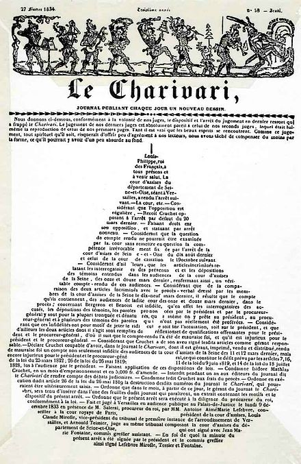

ORIGINS of concrete
poetry

In his 2008 introduction to Ohio State University’s visual poetry collection, Sackner distinguishes between concrete and visual poetry. Concrete poems rely solely on letters and words to create visual images, whereas visual poems integrate both images and text.
A Calligram, for instance, arranges words in a specific shape related to the text's meaning. In contrast, a Concrete Poem emphasises the physical layout of words and letters, focusing on their placement to create meaning rather than shaping them into a recognisable form. Concrete Poets experiment with spatial relationships, using repetition, fragmentation, and unconventional spacing to generate a visual-verbal interaction.
The printed version of "The Mouse's Tale", p.36 in the 1865 edition of Alice's Adventures in Wonderland
CHALLENGING
literary modernism
As a late phase of Literary Modernism, Concrete Poetry broke away from the expansive, complex linguistic structures favoured by earlier modernist writers. Instead, it reduced the text to a bare minimum, often using only a few words carefully placed to encapsulate profound ideas or emotions.
This stark reduction marked a shift in literary experimentation, challenging traditional notions of poetic form. Concrete Poetry holds a unique position among avant-garde literary movements today. Unlike many other experimental forms, it enjoys more popularity outside of academic circles, appealing to a broader audience through its striking visual presentation.
HOW is a
calligram different from a concrete poem?

Concrete Poetry originated in the 1950s, influenced by Concrete Art in Northern Europe and Latin America. It sought to bring the clarity and simplicity of visual art to written language. Many early Concrete Poets were closely tied to Concrete Artists and often borrowed basic visual designs such as grids, spirals, and columns - directly from art pieces to arrange their text.
This practice of simplifying complex ideas into minimalist forms reflected the modernist ideas seen in the International Style, known as the "architecture of the machine age," which
embodied the crystallisation of modernism
in building design.